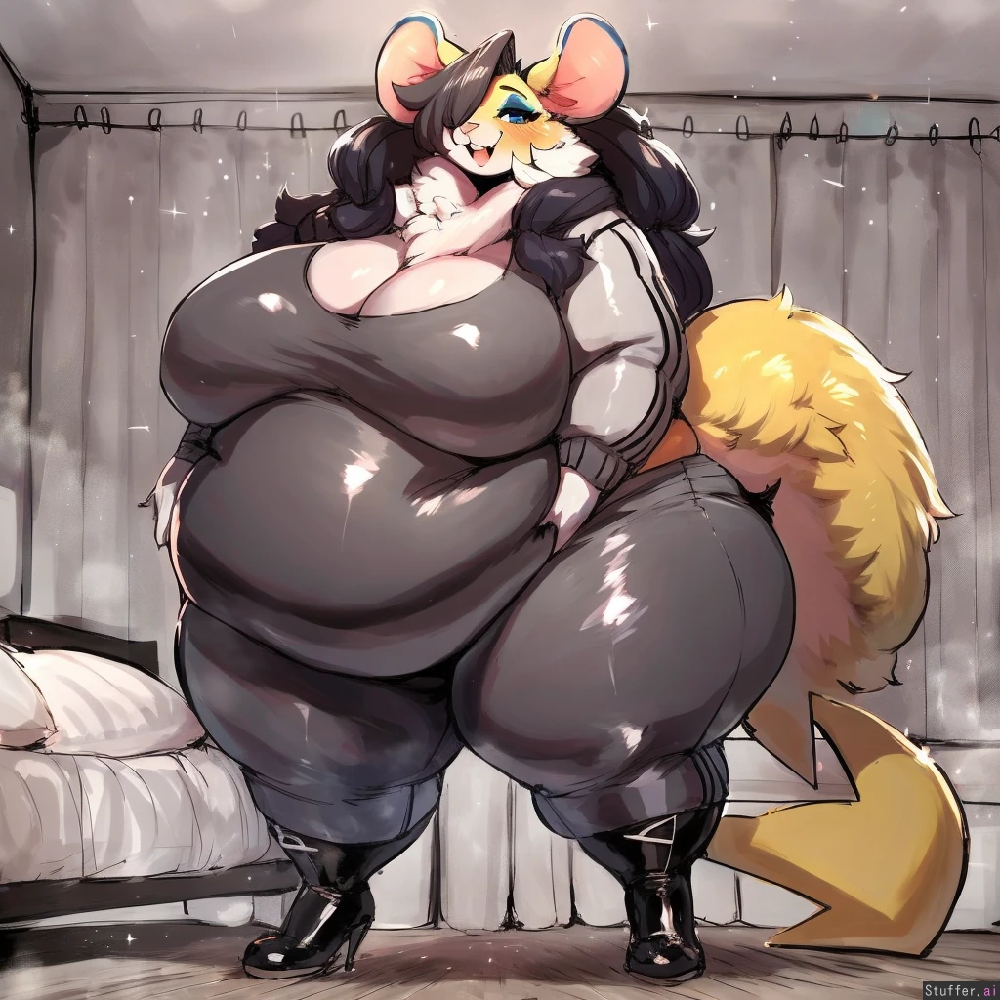
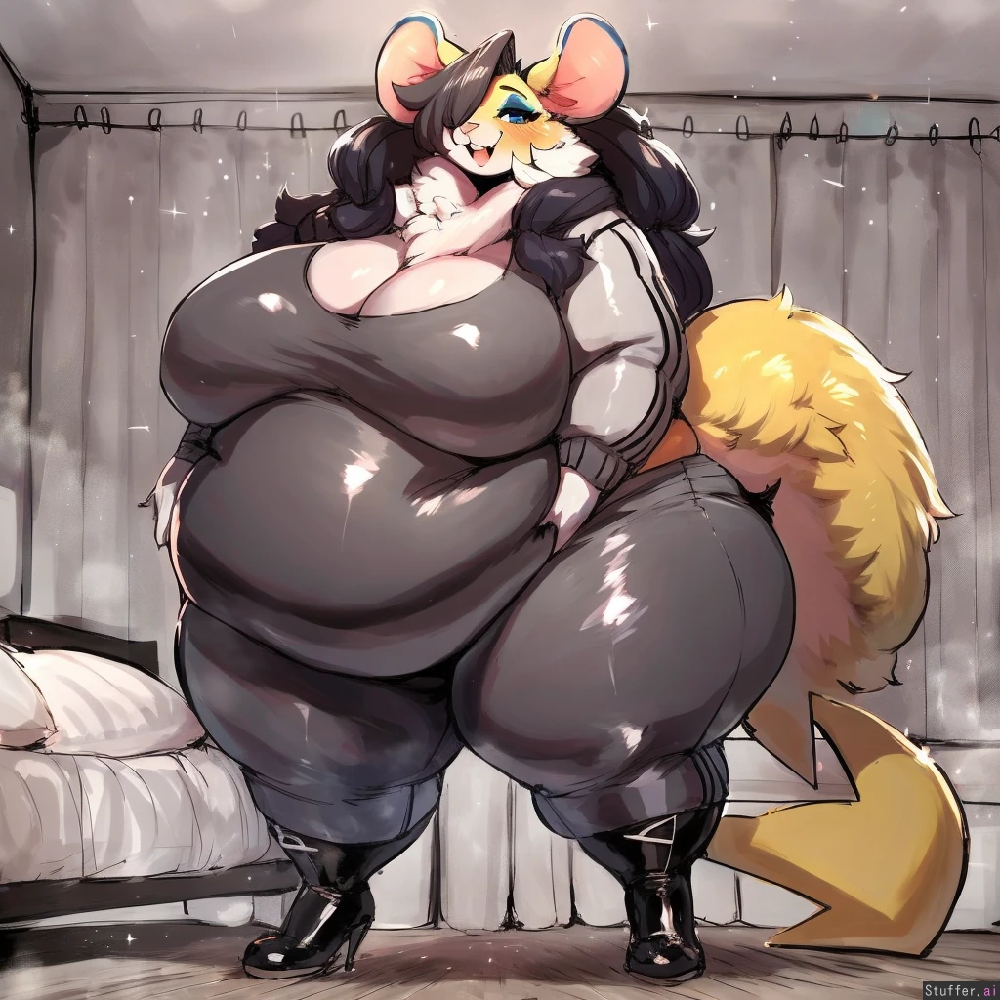
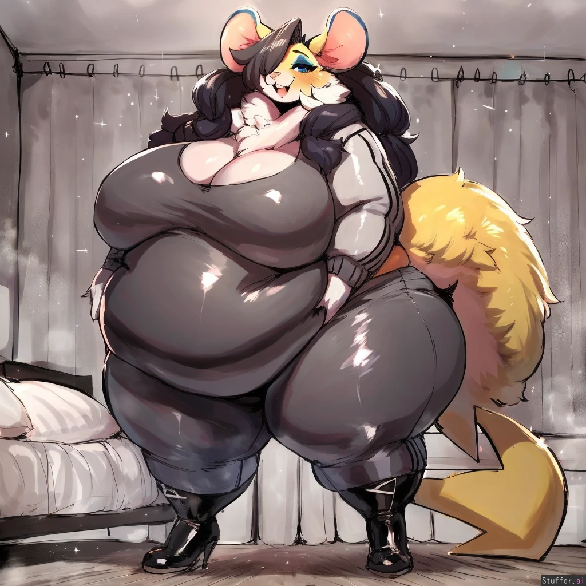

Carolina Santos is a cute goth mouse. She is reserved, modest, shy, and motherly.

I have 3 book universes im working on: a fantasy one, a sci-fi one, and lastly an ocean wasteland one.
 This is the Hailstorm class Artillery Assault Vehicle. The guns it has are to hold back infantry, destroy artillery, and go toe to toe against enemy main battle tanks.
This is the Hailstorm class Artillery Assault Vehicle. The guns it has are to hold back infantry, destroy artillery, and go toe to toe against enemy main battle tanks.
 This is one of the first Cataclysm class units I made, The Unyielding Retribution mech. It uses a cataclyst generator to harness radiation and thunder for its weapons making it effective against all targets.
This is one of the first Cataclysm class units I made, The Unyielding Retribution mech. It uses a cataclyst generator to harness radiation and thunder for its weapons making it effective against all targets.
 This is one of the tank killers I made. The recoil on the main cannon is so great - launching anything in a 40 meter radius flying from the air pressure alone - the pilots have dubbed it the Earth Crusher tank. To circumvent this recoil, the tank digs itself into the ground before firing, with each successive shot digging itself deeper. The tank has different ammo types to accomodate any situation.
This is one of the tank killers I made. The recoil on the main cannon is so great - launching anything in a 40 meter radius flying from the air pressure alone - the pilots have dubbed it the Earth Crusher tank. To circumvent this recoil, the tank digs itself into the ground before firing, with each successive shot digging itself deeper. The tank has different ammo types to accomodate any situation.
 My best Cataclysm class units, the Jormungandr Intercontinental artillery...
My best Cataclysm class units, the Jormungandr Intercontinental artillery...
 ...and the Armaggedon Type walking fortress.
...and the Armaggedon Type walking fortress.